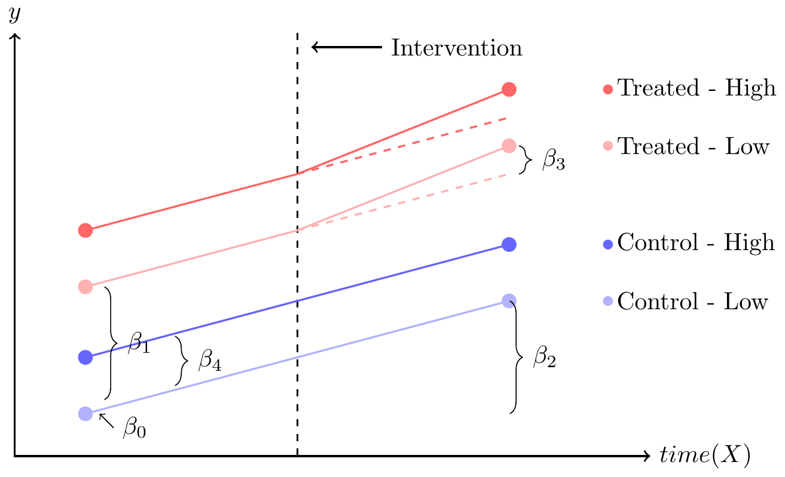

Difference-in-Differences for Social Epidemiology
Danish Epidemiology Society Workshop
Sam Harper
2024-11-06
“Methods to Study Social Inequality in Health”
Outline
1. Asking Questions
2. Basics of DD
3. DD for Inequalities
4. Extensions
1. Asking Questions
What are “Methods” in Social Epidemiology?
Existence of social differences in health (Descriptive)
Causes of observed social differences in health (Etiologic)
- Overall effect of social group categories (total “effects”)
- Direct/Indirect effects (causal mediation)
Policies to address causes and/or remediate social differences in health. (Policy/Intervention)
Where is the evidence?
It is clear that evidence on the effectiveness and cost-effectiveness of public health interventions is often missing. Sometimes this is because policies are insufficiently subjected to outcome evaluation, perhaps because it is assumed that they are mostly beneficial and any positive outcomes can be taken as read.
There is, for example, a wealth of aetiological evidence…However, it often appears to be difficult to translate this information into new interventions and even when the interventions are implemented, their evaluation is often problematic.
Can interventions make things worse?
…a large part of the literature is descriptive rather than analytical.
We found no support for the notion that the methods used to reduce smoking decrease inequalities in health between educational groups.
Causal questions
We want to know:
Did the program work? If so,for whom? If not, why not?
If we implement the program elsewhere, should we expect the same result?
Did it decrease inequalities?
- These questions involve counterfactuals about what would happen if we intervened to do something.
- These are causal questions.
Causation, Association, and Confounding
Causal effect: Do individuals randomly assigned to treatment have better outcomes? \[E[Y|SET(T=1)] - E[Y|SET(T=0)]\]
Association: Do treated individuals have better outcomes? \[E[Y|T=1] - E[Y|T=0]\]
Confounding: \[E[Y|SET(T=1)] - E[Y|SET(T=0)] \neq E[Y|T=1] - E[Y|T=0]\]
Consequences of non-randomized treatment
If we aren’t controlling treatment assignment, who is?
Policy programs rarely select people to treat at random.
- Targeting those most likely to benefit.
- Programs implemented in response to events.
- State taxes (or subsidies) for certain goods.
- Targeting those most likely to benefit.
People do not choose to participate in programs at random.
- Welfare programs, health screening programs, etc.
- People who believe they are likely to benefit from the program.
Thinking about research design
Without randomization \((Z)\), we focus on exploiting:
- Treated group with change in exposure.
- Comparison group without change.
Recall the potential outcomes framework. We need a substitute population (treated and controls):
\[E[Y^{1}-Y^{0}]=E[Y^{1}|T=1]-E[Y^{0}|T=0]\]
- Where should we get our counterfactual?
One-group posttest design with control group
One-group pretest-posttest design
One-group pretest-posttest design
Even a single pretest observation provides some improvement over the posttest only design.
Now we derive a counterfactual prediction from the same group before the intervention.
Provides weak counterfactual evidence about what would have happened in the absence of the program.
We know that \(Y_{t-1}\) occurs before \(Y_{t}\) (correct temporal ordering).
Could be many other reasons apart from the intervention that \(Y_{t}\neq Y_{t-1}\).
Stronger evidence if the outcomes can be reliably predicted and the pre-post interval is short.
Better still to add a pretest and posttest from a control group.
Adding pretests for both groups
How does this help?
Pre/post in control helps resolve this by differencing out any time-invariant characteristics of both groups.
Many observed factors don’t change over the course of an intervention (e.g., geography, parents’ social class, birth cohort).
Any time-invariant unobserved factors also won’t change over intervention period.
We can therefore effectively control for them.
Measuring same units before and after a program cancels out any effect of all of the characteristics that are unique to that observation and that do not change over time.
This also has the benefit of canceling out (or controlling for) unobserved time-invariant characteristics.
The need for a control group
What if there were no intervention?
What if there were no intervention?
What if there were no intervention?
What if things worsened over time?
What if things worsened over time?
More time periods make better evaluations
Parallel pre-trends increase “exchangeability”
2. Basics of DD
Difference-in-Differences: Basic Idea
The simplest DD setting:
Outcomes observed for “units” observed in one of two groups:
- Treated
- Control
Outcomes observed in one of two time periods:
- Before intervention
- After intervention.
Treated: only units in one of the two groups are exposed to a treatment, in the second time period.
Control: Never observed to be exposed to the treatment.
Difference-in-Differences: Basic Idea

The average change over time in the non-exposed (control) group is subtracted from the change over time in the exposed (treatment) group.
Double differencing removes biases in second period comparisons between the treatment and control group that could result from:
- Fixed (i.e., non time-varying) differences between those groups.
- Comparisons over time in the treatment group that could be the result of time trends unrelated to the treatment.
Key Assumption: Parallel Trends
Basic DD controls for any time invariant characteristics of both treated and control groups.
Does not control for any time-varying characteristics.
If another policy/intervention occurs in the treated (or control) group at the same time as the intervention, we cannot cleanly identify the effect of the program.
DD main assumption: in the absence of the intervention treated and control groups would have displayed similar trends.
This is called the parallel trends assumption.
Classic epidemiology example: Water and cholera

Snow’s method
Couldn’t randomize.
Lambeth moved intake upstream of London after 1849.
SV similar to Lambeth, but did not move.
SV as ‘unaffected’ control.
Did not estimate DD parameter, but idea was there.
| Region | Rate (1849) | Rate (1854) | Post-Pre |
|---|---|---|---|
| Lambeth (treated) | 130.1 | 84.9 | -45.2 |
| Southwark + Vauxhall (control) | 134.9 | 146.6 | 11.7 |
| Group Diff (treat - control) | -4.8 | -61.7 | ??? |
Why is Snow’s work compelling?

- Evidence of pre-treatment equivalence between groups:
“In many cases a single house has a supply different from that on either side. Each company supplies both rich and poor, both large houses and small; there is no difference either in the condition or occupation of the persons receiving the water of the different companies…”
- No knowledge of mechanisms or intervention:
“divided into two groups without their choice, and, in most cases, without their knowledge”
Difference-in-Differences without Regression
DD (can be) just differences in means.
Let \(\mu_{it}=E(Y_{it})\)
\(i=0\) is control, \(i=1\) treated.
\(t=0\) is pre, \(t=1\) is post.
One ‘difference’ is pre-post in treated: \(\mu_{11}-\mu_{10}\)
Second ‘difference’ is pre-post in control: \(\mu_{01}-\mu_{00}\)
Differences-in-Differences: \((\mu_{11}-\mu_{10})-(\mu_{01}-\mu_{00})\)
Snow’s Example:
| Area | Pre | Post | Difference |
|---|---|---|---|
| Treated | 130 | 85 | -45 |
| Control | 135 | 147 | 12 |
| T - C | -5 | -62 | -57 |
DD Regression: Two Groups, Two Periods (2x2)
Single treated and control group, two periods:
\(\beta_{1}\) = Treated group
\(\beta_{2}\) = Post period
\(\beta_{3}\) = Product term
\[Y = \color{blue}{\beta_{0} + \beta_{1}*treat} + \color{red}{\beta_{2}*post} + \color{green}{\beta_{3}*treat*post}\]
\[Y=\beta_{0}+\beta_{1}Treat+\beta_{2}Post+\beta_{3}Treat*Post+\varepsilon_{t}\]
Difference-in-differences estimates the ATT
Focus on treated group due to selection
Our DD model is: \(Y=\beta_{0}+\beta_{1}Treat+\beta_{2}Post+\beta_{3}Treat*Post+\varepsilon\).
In the (possibly counterfactual) absence of intervention, the expected outcome is:
- \(E\left(Y_{i}^{0}|T=1,A=0\right)=\beta_{1}+\beta_{2}\)
In the (possibly counterfactual) presence of intervention, the expected outcome is:
- \(E\left(Y_{i}^{1}|T=1,A=1\right)=\beta_{1}+\beta_{2}+\beta_{3}\)
ATT is the expected difference in \(Y_{i}^{1}-Y_{i}^{0}\) for those treated in the post-period:
- \(ATT=E\left(Y^{1}-Y^{0}|T=1\right)=\beta_{3}\)
Back to Snow’s water pump
How to estimate the impact?
\(Treat=1\) if Lambeth, 0 if SW
\(Post=1\) if 1854, 0 if 1849
\(Treat*Post=1\) if Lambeth in 1854, 0 otherwise.
\(Y=\beta_{0}+\beta_{1}Treat+\beta_{2}Post+\beta_{3}Treat*Post+\varepsilon\)
| Province, Time | Estimate | Time Diff | DD |
|---|---|---|---|
| SW, 1849 | \(\beta_{0}\) | ||
| \(\beta_{2}\) | |||
| SW, 1854 | \(\beta_{0} + \beta_{2}\) | ||
| \(\beta_{3}\) | |||
| Lambeth, 1849 | \(\beta_{0} + \beta_{1}\) | ||
| \(\beta_{2} + \beta_{3}\) | |||
| Lambeth, 1854 | \(\beta_{0} + \beta_{1} + \beta_{2} + \beta_{3}\) |
Reformulation of the model using ‘fixed effects’
Express our earlier model using ‘fixed effects’:
Dummy for Group
Dummy for Time
Time-varying policy indicator
\[Y = \color{blue}{\beta_{0} + \beta_{1}*Group2} + \color{red}{\beta_{2}*Time2} + \color{green}{\beta_{3}*policy}\]
\(\color{green}{\beta_{3}}\) still estimates the ‘difference-in-differences’ parameter.
What about multiple treated groups?
Easy to rewrite our earlier model for multiple groups treated at the same time.
3 units and 3 time periods.
Groups 1 and 3 implement policy at T2.
g2 and g3 are dummies for group 2 and 3
t2 and t3 are respective time dummies for periods 2 and 3.
| y | group | time | policy | g2 | g3 | t2 | t3 |
|---|---|---|---|---|---|---|---|
| . | 1 | 1 | 0 | 0 | 0 | 0 | 0 |
| . | 1 | 2 | 1 | 0 | 0 | 1 | 0 |
| . | 1 | 3 | 1 | 0 | 0 | 0 | 1 |
| . | 2 | 1 | 0 | 1 | 0 | 0 | 0 |
| . | 2 | 2 | 0 | 1 | 0 | 1 | 0 |
| . | 2 | 3 | 0 | 1 | 0 | 0 | 1 |
| . | 3 | 1 | 0 | 0 | 1 | 0 | 0 |
| . | 3 | 2 | 1 | 0 | 1 | 1 | 0 |
| . | 3 | 3 | 1 | 0 | 1 | 0 | 1 |
Extending the model to multiple groups/times
- The regression model with group and time fixed effects would now look something like this (where \(\color{red}{\beta_{5}}\) is the DD estimate where policy=1 vs. 0):
\[Y_{gt}=\beta_{0}+\beta_{1}g2+\beta_{2}g3+\beta_{3}t2+\beta_{4}t3+\color{red}{\beta_{5}}\color{black}{p_{gt}}+\varepsilon_{st}\]
- Reference categories (for interpreting \(\beta_{0}\)) are group 1 \((g1)\) and time 1 \((t1)\).
- More generally, you could write the basic equation with multiple group \((\gamma_{g})\) and time \((\tau_{t})\) fixed effects as:
\[Y_{gt}=\alpha + \gamma_{g} + \tau_{t} + \color{red}{\delta^{DD}} \color{black}{p_{gt}}+\varepsilon_{st}\] where \(\color{red}{\delta^{DD}}\) is the difference-in-differences estimate for groups treated at time t.
3. DD for Inequalities
Evaluating impact on inequalities
Evaluated impact of MA reform on inequalities in hospital admissions.
Compared MA to nearby states: NY, NJ, PA.
Intervention “worked”: % uninsured halved (12% to 6%) from 2004-06 to 2008-09.
We want credible counterfactuals
Strong visual evidence that pre-intervention trends similar in treated and control groups.
Adds credibility to assumption that post-intervention trends would have been similar in the absence of the intervention.
Little evidence of differential impact of health reform on racial/ethnic differences in hospital admissions
What was the English “strategy”?
National policies in 1999
Tackling low income, family support policies, tax-reduction and long-term care for the elderly, anti-smoking policies, improving early education
National policies in 2003
Reducing poor health behaviors in manual social groups, improving housing quality, and reducing accidents at home and on the road.
These policies showed little evidence for inequality reduction in England …
…even if there is no more reduction in health inequalities after the implementation of the strategy than before, the changes in trends in England could still be more favourable than those in other European countries that have done less to reduce health inequalities. -Hu et al. (2016)
Data on self-reported health, smoking, obesity
For comparison we selected countries that were in a similar stage of awareness of health inequalities, but that had not implemented a national strategy to tackle health inequalities.
- Treatment: 2000s vs. 1990s
- Comparison: England vs. Others
- SEP: Low vs. High Education
In the last and our main step, we added each of the comparison countries separately to the analysis of the English data, following the idea of “difference-in-differences analysis”. Our aim was to investigate whether the changes in trends in health inequalities between 1990–2000 and 2000–2010 were more favourable in England than those in the three comparison countries.
Regression-based approach:
Our basic setup was for group averages

Let’s add two social groups per unit
\(Y=\beta_{0}+\beta_{1}Treat+\beta_{2}Post+\beta_{3}Treat*Post+\beta_{4}High\)
\(Y=\beta_{0}+\beta_{1}Treat+\beta_{2}Post+\beta_{3}Treat*Post+\beta_{4}High\)
Allowing for SEP-group heterogeneity
Socioeconomic differences may be different magnitude in treated vs. control areas.
Better resources, more advocacy, different demographics, etc.
\({\scriptstyle Y=\beta_{0}+\beta_{1}Treat+\beta_{2}Post+\beta_{3}Treat*Post+\beta_{4}High + \color{blue}{\beta_{5}Treat*High}}\)
Allowing for SEP-time heterogeneity
Secular trends may be changing differentially by social group in all areas.
Different baseline health, health behaviors, access to resources, etc.
\({\scriptstyle Y=\beta_{0}+\beta_{1}Treat+\beta_{2}Post+\beta_{3}Treat*Post+\beta_{4}High + \beta_{5}Treat*High + \color{blue}{\beta_{6}Post*High}}\)
\({\scriptstyle Y=\beta_{0}+\beta_{1}Treat+\beta_{2}Post+\beta_{3}Treat*Post+\beta_{4}High + \beta_{5}Treat*High + \beta_{6}Post*High + \color{green}{\beta_{7}Treat*Post*High}}\)
Results showed that changes in trends of inequalities after 2000 were not statistically significantly different between England and any of the other countries, with the single exception of obesity for which the change was less favourable in England than in Italy (OR = 1.64, p < 0.05).
The interpretation of the interaction terms in difference-in-differences logistic models is essentially similar to that in the more common linear models, except that they indicate the relative change of the odds of the health outcome in the treatment group relative to that in the control group, instead of the absolute change of the rate of the health outcome in the treatment group minus that in the control group
Parallel trends assumption is scale dependent.
Can’t have it both ways.
Differences in levels
Differences in logs
Implications for counterfactuals
The change in the treated group in both graphs is identical (from 1.4 to 2.5).
Parallel trends in levels (\(\Delta 0.8\)) consistent with positive impact of treatment.
Parallel trends in logs (\(\times 1.3\)) consistent with negative impact of treatment.
4. Extensions
Extending the basic 2x2 DD
Note that our basic regression model assumes the only time-varying factor is the policy: \[Y_{gt}=\alpha + \gamma_{g} + \tau_{t} + \color{red}{\delta^{DD}} \color{black}{p_{gt}} + \varepsilon_{gt}\]
What if there are confounders of the decision to change the policy?
We may have omitted important factors that:
- differ by treatment status.
- affect the outcome.
- are time-varying, but not affected by the treatment \((TVC)\).
Adding time-varying covariates
Suppose the policy is a soft drink tax and the outcome calories consumed (linear).
We might worry that changes in the density of fast food restaurants could be a common cause of both. Now add measured time-varying confounders:
\[Y_{gt}=\alpha + \gamma_{g} + \tau_{t} + \color{red}{\delta^{DD}} \color{black}{p_{gt}}+ \zeta Z_{gt}+\varepsilon_{gt}\]
where \(\zeta Z_{gt}\) is a vector of other controls at the cluster level.
Important especially if you think other policies may have been implemented simultaneously with treatment.
Now, conditional on FEs and \(\zeta Z_{gt}\), we assume that the timing of the change in policy is as good as random.
Extensions to non-binary treatments
DD design can also handle treatments, policies, or exposures that are not dichotomous.
E.g., changes in minimum wage levels (varying “treatment” intensity)
- Estimate varying levels of increase ($2 increase vs. $4)
“Sin” taxes (e.g., alcohol or cigarettes).
- differential changes in excise taxes (smaller vs. larger).
“Weaker” vs. “Stronger” policies
texting while driving (primary vs. secondary offense)
thresholds for blood alcohol limits (0.15 vs. 0.10 vs. 0.08).
Dynamic Effects
Basic DD estimates the average ATT over the entire post-intervention period.
May average over important variations in how the treatment evolves over time.
Was the impact immediate? Transient? Sustained over time?
Can extend the basic model to allow for heterogeneity over time.
Hypothetical dynamic treatment effect scenarios
What about staggered treatments?
Different groups adopt treatments at different times.
Creates many 2x2 DDs.

Early-adopters (k) vs. never treated (U)
Later-adopters (l) vs. never treated (U).
Early (k) vs. later (l) adopters.
Later (l) vs. earlier (k) adopters.

What is the problem?
Using earlier treated groups as controls only ‘works’ if the treatment effects are:
- Homogeneous across groups at a given time; and
- Homogeneous over time (no dynamic effects).
This adds any changes in treatment effects in the early group, which get subtracted from the DD estimate.
Can lead to \(\beta^{DD}\) that is a poor summary of group-specific effects if there is heterogeneity.
What are potential solutions?
- All basically involve not allowing early treated groups to serve as controls later.
Callaway and Sant’Anna
Use non-parametric group-time ATTs (+ covariates).
Abraham and Sun
Use saturated fixed effects to ensure that prior treated units are not used as controls
Cengiz, Dube, Lindner, and Zipperer
Create state-event-specific panel datasets and calculate event-specific estimates using separate regressions for each state-event.
Key Takeaways
DD compares changes in outcomes in a treated group to a control group.
Controls for time-invariant unobserved group factors and common trends in outcomes.
Requires good qualitative knowledge about why the treated group became treated.
Core assumption is parallel trends, unverifiable but not impossible to investigate.
Can be extended to address inequalities, but stronger assumptions needed.
Strong designs like DD can help reduce the “evidence gap”.
References
Caetano, C., Callaway, B., Payne, S., Rodrigues, H.S., 2022. Difference in Differences with Time-Varying Covariates.
Gertler, P.J., Martinez, S., Premand, P., Rawlings, L.B., Vermeersch, C.M., 2016. Impact evaluation in practice. World Bank Publications.
Rosenbaum, P.R., 2017. Observation and experiment: An introduction to causal inference. Harvard university press, Cambridge, Massachusetts.
Snow, J., Frost, W.H., Richardson, B.W., 1936. Snow on cholera: Being a reprint of two papers. Commonwealth Fund, New York.